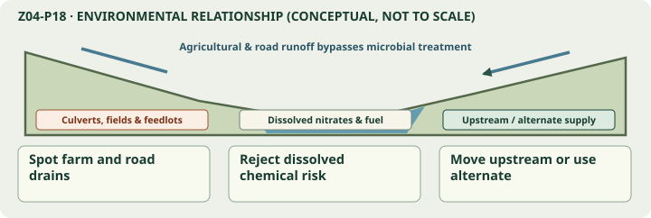

Z04-P18 · Water · New manuscript
Recognize agricultural, livestock and road-runoff contamination
Identify landscape markers of nitrate, pesticide, salt, fuel and manure runoff that rule out field water sources.
When it applies · Rural, suburban, farmland and roadside drainages, especially during spring snowmelt or after heavy rainfall.
Equipment · Area map, carried potable water and alternate supply plan.

Actions
- Look for tile drains, ditch culverts, feedlots, heavily grazed banks, road salt residue, sheen or freshly applied fields draining into the channel.[W22, W23]
- Recognize that nitrates, pesticides, road de-icers and petroleum hydrocarbons dissolve in clear water and pass straight through boiling and standard field filters.[W01, W22, W23]
- Move upstream of road and agricultural inputs or rely on carried potable water rather than attempting to treat contaminated ditch runoff.[W01, W22, ED]
Failure recognition · Boiling roadside ditch water or filtering pasture-runoff creeks and assuming chemical fertilizers or fuel residues are removed.[W01, W22]
Verify · Confirm the selected water source sits clear of visible road culverts, feedlots and agricultural drainage inflows.[W22, W23, ED]
Stop or change course · Any fuel sheen, chemical odor, industrial outfall or active agricultural drainage is an immediate rejection boundary requiring another supply.[W01, W22]
Evidence and editorial notes
- W01 · CDC · How to Make Water Safe in an Emergency (2024-09-19)
- Section: Water with fuel or toxic chemicals in it · Conditions: Suspected fuel, toxic chemicals or radioactive contamination
Support: Use a different safe supply. Standard boiling and microbial disinfection do not make this water safe.
Limitations: Does not list contaminant-specific lab remediation; applies to emergency consumer decisions only. · Conflicting evidence: None across CDC/EPA emergency guidance.
Editorial note: Used as upstream hard-stop gate prior to any field treatment card. · Specialist reviewer: Drinking-water safety and public health
Primary source · checked 2026-11-24 - W22 · US EPA · National Primary Drinking Water Regulations (current web edition)
- Section: National Primary Drinking Water Regulations · Conditions: Surface or groundwater near agriculture, industry, mines, roads, or old plumbing
Support: Regulated drinking-water hazards span inorganic chemicals (lead, arsenic, nitrate), organic solvents, pesticides, radionuclides, and microbes; microbial treatments do not remove dissolved inorganic or organic chemicals.
Limitations: Field observation cannot measure dissolved chemical concentration; laboratory testing is required. · Conflicting evidence: None; underpins strict chemical-rejection boundaries.
Editorial note: Explains why agricultural runoff, mine tailings, and road salt/fuel require source rejection. · Specialist reviewer: Environmental toxicology and drinking-water safety
Primary source · checked 2026-11-24 - W23 · Minnesota Dept. of Health · Drinking Water Contaminants (current web edition)
- Section: Drinking Water Contaminants · Conditions: Minnesota surface and groundwater sources
Support: Agricultural nitrates, industrial chemicals, road runoff, and naturally occurring minerals can affect local water independent of visual clarity or microbial load.
Limitations: Specific contaminant risk varies by county, aquifer, and watershed land use. · Conflicting evidence: None; regionalized extension of EPA-CONTAM.
Editorial note: Anchors Upper Midwest watershed and land-use source screening. · Specialist reviewer: Regional environmental health
Primary source · checked 2026-11-24
Source lineage · EPA regulations and Minnesota MDH contaminants; new manuscript · Classification · New manuscript.